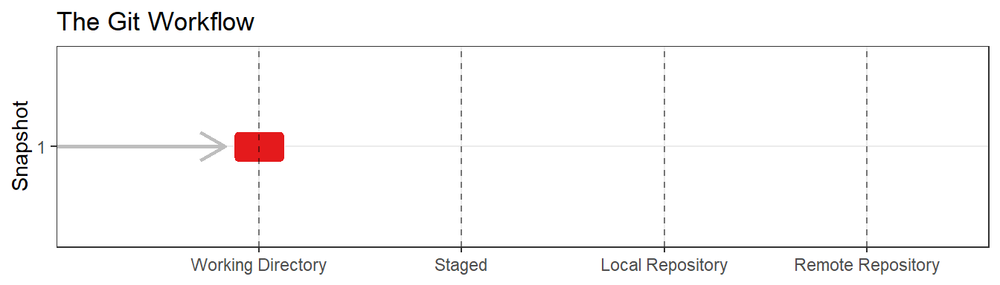
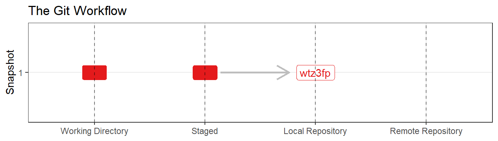
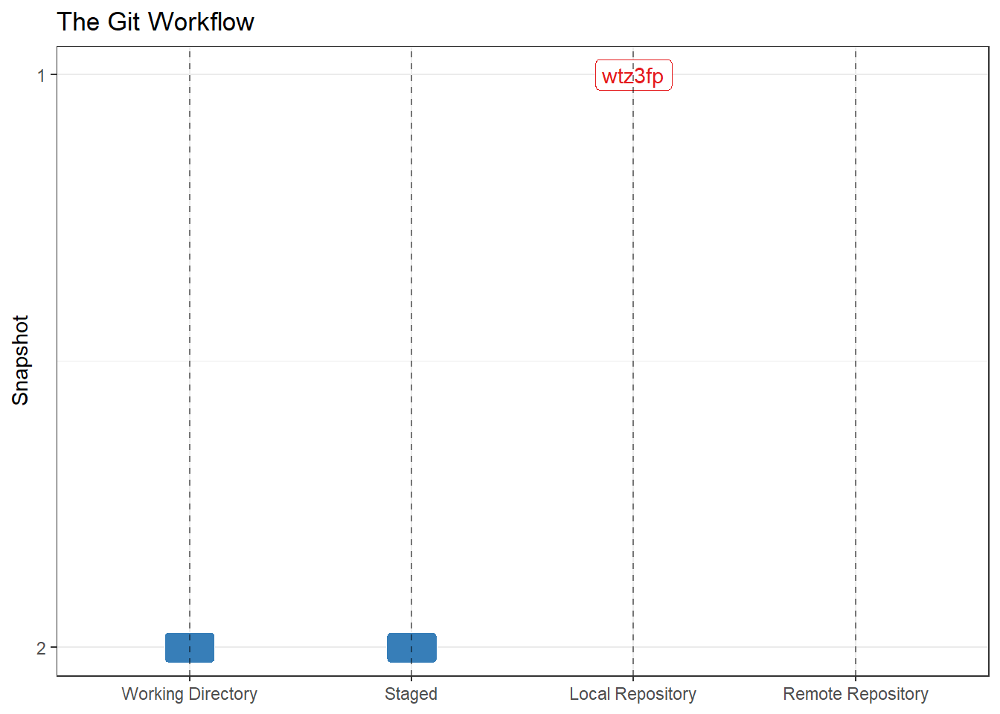
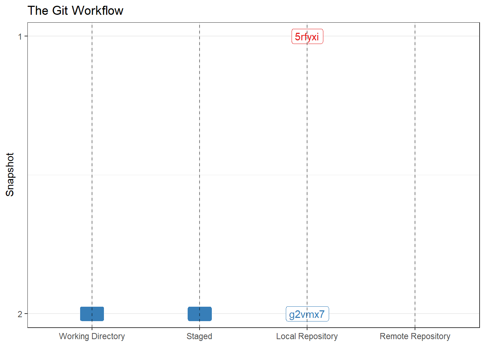

amreimer@DFGSXQDSF206801 MINGW64 /s/RTS/Reimer/Research_Best_Practices/git_practice
$2 The Basic Git Workflow
Herein we will focus on learning Git using the Terminal. The terminal is the easiest to demonstrate in a text document and everything you need to do can be done in the terminal. I’ll demonstrate the most important commands in the text that follows. In order to use the terminal effectively it helps to make one change to the Rstudio defaults by executing the following point and click commands: Tools>Terminal>Terminal Options…>(change initial directory to ‘project directory’). This change will ensure your terminal opens in the correct directory and save some unnecessary terminal prompts.
That said, many users find it easier to interact with Git through a graphical user interface (GUI). The most accesible is found in RStudio itself. A Git tab will show up in the Environment/History/Connections/Tutorial window provided your directory is a Git repository. Using a GUI that can save a lot of keystrokes for simple commands and often displays revisions more clearly that they are displayed in the shell. The drawbacks are that some commands can only be completed in the terminal, each GUI different, and point and click commands are difficult to demonstrate in a text document. For this reason, we will focus on the terminal but show how to complete each command in the Rstudio GUI in the appendix. In practice, I tend to work with a combination of the terminal and the Rstudio GUI.
2.0.1 git init
If you have an existing Rstudio project1 that needs to become a git repository git init is the appropriate command. In the example below I have a Rstudio project in a folder named “git_practice” on S drive under S:/RTS/Reimer/Research_best_practices. In the terminal, each command line prompt ($) is proceeded by the username, shell type, and directory location.
The terminal session below shows 3 commands and the output received after each command: 1) verify the directory is not a git repository with git status, 2) make is a git repository with git init, 3) verify the directory is now a git repository with git status.
amreimer@DFGSXQDSF223076 MINGW64 /s/RTS/Reimer/Research_Best_Practices/git_practice
$ git status
fatal: not a git repository (or any of the parent directories): .git
amreimer@DFGSXQDSF223076 MINGW64 /s/RTS/Reimer/Research_Best_Practices/git_practice
$ git init
Initialized empty Git repository in //dfg.alaska.local/DSF/Anchorage/RTS/Reimer/Research_Best_Practices/git_practice/.git/
amreimer@DFGSXQDSF223076 MINGW64 /s/RTS/Reimer/Research_Best_Practices/git_practice ({main})
$ git status
On branch {main}
No commits yet
Untracked files:
(use "git add <file>..." to include in what will be committed)
.gitignore
git_practice.Rproj
nothing added to commit but untracked files present (use "git add" to track)
amreimer@DFGSXQDSF223076 MINGW64 /s/RTS/Reimer/Research_Best_Practices/git_practice ({main})
$The git init command creates a git repository in your project directory. At this point, the repository is empty, but the git workflow has been enabled which will allow us to commit to the repository in the future. The rounded rectangle in Figure 2.1 indicates all of the files included in your analysis at this point in time. At the moment they are represented by an empty rectangle which indicates that the files in your working directory are in a git work space. We will build this figure as we complete tasks within the Git work space.

2.0.2 git add
In the last git status report shown above 2 files (.gitignore and git_practice_A.Rproj) were noted that could be added to the repository. Before we do that let’s create third file named fib_seq.R which contains a single line of code fib_seq <- c(0, 1). The Fibonacci sequence is the sequence created when each value in the sequence is the sum of the 2 previous values in the sequence and the vector c(0, 1) initializes the sequence. We will add to this sequence to practice the use of git. The terminal session below shows 5 commands: 1) view which files need to be added with git status, 2) add each file one at a time with git add, 3) verify all files have been added with git status. Notice that I made a typo while attempting to add the .Rproj file. I survived this catastrophe with a warning, which is typical of mistakes in the terminal.
$ git status
On branch {main}
No commits yet
Untracked files:
(use "git add <file>..." to include in what will be committed)
.gitignore
fib_seq.R
git_practice.Rproj
nothing added to commit but untracked files present (use "git add" to track)
amreimer@DFGSXQDSF223076 MINGW64 /s/RTS/Reimer/Research_Best_Practices/git_practice ({main})
$ git add .gitignore
amreimer@DFGSXQDSF223076 MINGW64 /s/RTS/Reimer/Research_Best_Practices/git_practice ({main})
$ git add fib_seq.R
amreimer@DFGSXQDSF223076 MINGW64 /s/RTS/Reimer/Research_Best_Practices/git_practice ({main})
$ git_add git_practice.Rproj
bash: git_add: command not found
amreimer@DFGSXQDSF223076 MINGW64 /s/RTS/Reimer/Research_Best_Practices/git_practice ({main})
$ git add git_practice.Rproj
amreimer@DFGSXQDSF223076 MINGW64 /s/RTS/Reimer/Research_Best_Practices/git_practice ({main})
$ git status
On branch {main}
No commits yet
Changes to be committed:
(use "git rm --cached <file>..." to unstage)
new file: .gitignore
new file: fib_seq.R
new file: git_practice.Rproj
amreimer@DFGSXQDSF223076 MINGW64 /s/RTS/Reimer/Research_Best_Practices/git_practice ({main})
$Use of git add stages files you would like to track for inclusion in your git repository. The rectangle in Figure 2.2 is now filled which indicates that files within your working directory are staged and ready to be committed.
Notice Git tells you how to unstage a file if you added one inadvertently. On occasion there are files in your working directory which you do not want Git to track. Examples might be .pdf files for literature you referencesd while conducting the analysis, word documents you produced for operational planning and reporting, or extreamly large outputs. It’s fine to exclude these sort of files but before you do so consider… “Would a future researcher need access to this file to recreate my work?”. If they would you should add them to the repository.
Tt can be cumbersome to have a long list of files which Git recognizes as present in your working directory but you are not actively tracking. The solution is to open the file .gitignore and identify the files you do not want to track. You can use wildcards if you prefer not to track all files of a certain type and or specify folders if you don’t want to track anything in certain sub-directories. For example, *.xlsx would ignore all .xlsx files in your working directory while posts/ would ignore all of the files in the folder posts within your working directory.
2.0.3 git commit
In the git status response above 3 files were staged. Let’s commit those files in the terminal. In the terminal session above we verified all of the files we wanted to commit were staged using git status, recorded (committed) all of the staged files into the repository using git commit, verified the commit worked using git status and examined the repository log using git log.
amreimer@DFGSXQDSF223076 MINGW64 /s/RTS/Reimer/Research_Best_Practices/git_practice ({main})
$ git status
On branch {main}
No commits yet
Changes to be committed:
(use "git rm --cached <file>..." to unstage)
new file: .gitignore
new file: fib_seq.R
new file: git_practice.Rproj
amreimer@DFGSXQDSF223076 MINGW64 /s/RTS/Reimer/Research_Best_Practices/git_practice ({main})
$ git commit -m "Initialize Fibonacci sequence" -m "Sequential additions to the Fibonacci sequence will provide a simple way to demonstrate several cycles of the git workflow including add/commit, push/pull, collaborate, fork, branch, merge, merge conflicts, exc. I even got my wife a GitHub account for this. Wish us luck!"
[{main} e17181f] Initialize Fibonacci sequence
Date: Sun Jul 2 12:59:06 2023 -0800
3 files changed, 21 insertions(+)
create mode 100644 .gitignore
create mode 100644 fib_seq.R
create mode 100644 git_practice.Rproj
amreimer@DFGSXQDSF223076 MINGW64 /s/RTS/Reimer/Research_Best_Practices/git_practice ({main})
$ git status
On branch {main}
nothing to commit, working tree clean
amreimer@DFGSXQDSF223076 MINGW64 /s/RTS/Reimer/Research_Best_Practices/git_practice ({main})
$ git log
commit e17181fa781b2e30096e1c7d31443aac18d527e5 (HEAD -> {main})
Author: Adam Reimer <adam.reimer@alaska.gov>
Date: Sun Jul 2 12:59:06 2023 -0800
Initialize Fibonacci sequence
Sequential additions to the Fibonacci sequence will provide a simple way to demonstrate several cycles of the git workflow including add/commit, push/pull, collaborate, fork, branch, merge, merge conflicts, exc. I even got my wife a GitHub account
for this. Wish us luck!
amreimer@DFGSXQDSF223076 MINGW64 /s/RTS/Reimer/Research_Best_Practices/git_practice ({main})
$Git log provides a summary of the commit. Two important parts are the commit ID and the commit message. The commit ID is a code which can be used to reference the commit in the future. Git assigned a long ID to each commit e17181fa781b2e30096e1c7d31443aac18d527e5 for this commit, but its common to using only the first 7 characters of the commit ID e17181f to refer to a commit.
Commit messages are required. Notice the commit message is broken into 2 parts. The first part is called the title or summary while the second part is called the description. A good practice is for the title to be brief (less that 50 characters) so that it displays well in most formats. There is no length limit for the description and this is the place to provide some explanation beyond what you can capture in the title. I’ve purposely been more verbose that typical with this commit to demonstrate a long description.

The git workflow described so far forms the basis on reproducible research using Git. In our example we will calculate the next several values in the Fibonacci sequence to practice this workflow. After a change is made and saved to the working directory your Git workspace will look something like:




2.0.3.1 When to Commit?
Saves and a commits serve different purposes. As we all know, save can and should be used frequently… many times an hour and/or any time you are stepping away from your work. This use is agnostic to whether the analysis is using a traditional or git workflow.
In contrast, commits are made for two reasons. First, a commit should be made whenever the analysis is at a point which you may want to revisit. Examples include; adding new data, adding a new component to the analysis, or any time the code was run and the results were distributed. Any one of these tasks may have resulted in a new ‘version’ in the traditional workflow but they don’t have to be major updates. The commit may also snapshot significant steps in a new features development or prior to experimenting with a new feature. These commits allow you to revert back to the previous code in the event the new feature is not an improvement. A second reason to commit is when the changes are substantive enough that the line-by-line change may be difficult to track if you did not commit until the new data/feature are complete.
The most important thing to note regarding commit messages is that, unlike save, there is no temporal component. While saves are designed to minimize the risk of lost work and should be frequent in time, commits are designed to record importance stages of the analysis and commits should be frequent with respect to progress. A difficult feature may take days to code but represent a single commit, provided the actual changes to the code are modest. Efficiency in commit frequency pay off when a large repository is being revisited at a later date.
2.0.4 git log
The view our commit history in the terminal use git log. For this example, I have not been including descriptions with my commit messages became the changes were simple enough to describe in the title. Note that the commit ID, author, dat, commit title and commit description are all shown in the log.
amreimer@DFGSXQDSF223076 MINGW64 /s/RTS/Reimer/Research_Best_Practices/git_practice ({main})
$ git log
commit 11cf98ff67b8ec4f8cd7f2c1650a176d5875fdcf (HEAD -> {main})
Author: Adam Reimer <adam.reimer@alaska.gov>
Date: Sun Jul 2 14:53:05 2023 -0800
Fourth entry in the Fibonacci sequence
Long and informative message goes here.
commit 3bb6c98bb0048bad7bda489bd8d40be24fb66acf
Author: Adam Reimer <adam.reimer@alaska.gov>
Date: Sun Jul 2 14:31:04 2023 -0800
Third entry in fib_seq
This message is not necessary for such a simple commit, but descriptions are an important part of reproducible research I’m writing a long message to set a good example. Have better content in yours.
commit e17181fa781b2e30096e1c7d31443aac18d527e5
Author: Adam Reimer <adam.reimer@alaska.gov>
Date: Sun Jul 2 12:59:06 2023 -0800
Initialize Fibonacci sequence
Sequential additions to the Fibonacci sequence will provide a simple way to demonstrate several cycles of the git workflow including add/commit, push/pull, collaborate, fork, branch, merge, merge conflicts, exc. I even got my wife a GitHub account
for this. Wish us luck!
amreimer@DFGSXQDSF223076 MINGW64 /s/RTS/Reimer/Research_Best_Practices/git_practice ({main})
$2.0.5 git diff
To seee the difference between two commits use git diff. With no additional arguments git diff will show the changes in the working directory relative to the last commit. Our working directory has no changes as illustrated by git status. Instead we can add a short commit ID to the command to see changed between the current working directoy and the commit 3bb6c9.
amreimer@DFGSXQDSF223076 MINGW64 /s/RTS/Reimer/Research_Best_Practices/git_practice ({main})
$ git status
On branch {main}
nothing to commit, working tree clean
amreimer@DFGSXQDSF223076 MINGW64 /s/RTS/Reimer/Research_Best_Practices/git_practice ({main})
$ git diff 3bb6c9
diff --git a/fib_seq.R b/fib_seq.R
index 9c118d5..4ce1d70 100644
--- a/fib_seq.R
+++ b/fib_seq.R
@@ -2,4 +2,5 @@
#Adam Reimer
fib_seq <- c(0, 1)
-fib_seq[3] <- fib_seq[1] + fib_seq[2]
\ No newline at end of file
+fib_seq[3] <- fib_seq[1] + fib_seq[2]
+fib_seq[4] <- fib_seq[2] + fib_seq[3]
\ No newline at end of file
amreimer@DFGSXQDSF223076 MINGW64 /s/RTS/Reimer/Research_Best_Practices/git_practice ({main})
$Git GUI’s are superior to the terminal when looking at line-by line differences but for completeness we will discuss how to read the output. The section --- a/fib_seq.R to +++ b/fib_seq.R identifies the files that were modified where --- a/ and +++ b refer to the previous and the current versions of the file respectively. The line @@ -2,4 +2,5 @@ tells us that the output is showing the original file starting on the second line and displaying the the next 4 lines (three unmarked lines and the line with a negative symbol) while the new version of the file is also shown starting from the second line but displaying the next 5 lines (the three unmarked lines and the two lines with a addition symbol). This makes sense because a single line was added to the new version.
side note: if you have an existing project directory that needs to become an Rstudio project the appropriate point and click sequence is New Project>Existing Directory>(provide location)↩︎